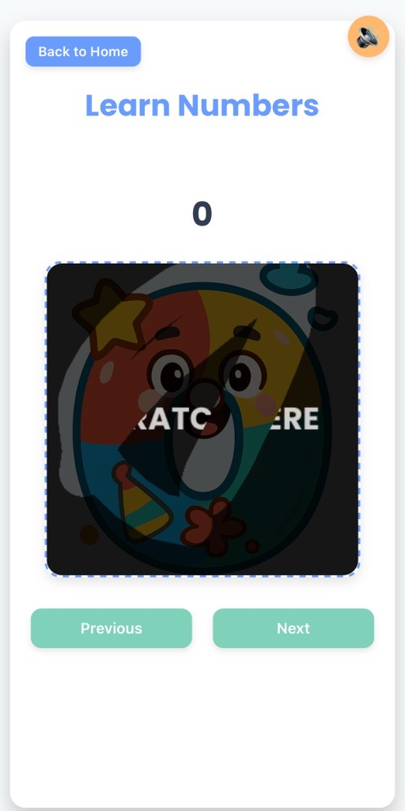
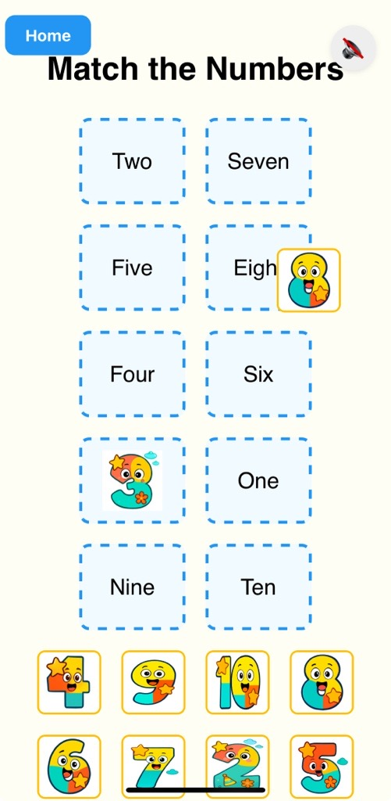
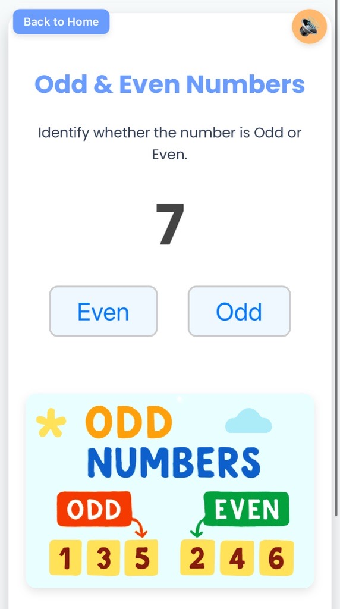

Free, fun, and educational number activities – perfect for toddlers, preschoolers, and kindergarteners. No login, no ads, just learning!
Is your child ready to fall in love with numbers? At Teachings.Ai, we make early math fun, interactive, and completely free! Our engaging online modules help young learners recognize numbers, match digits, identify odd and even numbers, and build confidence—all through play-based learning.
👉 Explore All Free Number Activities:
🔗 Learn & Scratch Numbers with Audio
🔗 Match the Numbers Game
🔗 Odd & Even Number Practice
Let’s explore the three powerful number learning modules we offer—and how they make math magical!
🎮 1. Learn Numbers with Scratch Cards & Audio
👉 https://teachings.ai/numbers.html
Say goodbye to boring flashcards! Our interactive number learning module turns number recognition into a sensory-rich experience.
How It Works:
- Click or tap to "scratch" off a card and reveal a hidden number (1–10).
- Press the audio button to hear the number pronounced clearly—perfect for auditory learners.
- Reinforces number recognition, counting, and pronunciation in a fun, game-like format.
🧠 Why It’s Effective:
Combines visual, tactile, and auditory learning—ideal for different learning styles. Builds curiosity with surprise reveal mechanics.
Screenshot #1: Scratch to reveal the number and listen to its pronunciation!
🧩 2. Match the Numbers – Drag & Drop Game
👉 https://teachings.ai/match-numbers.html
Ready for a number puzzle challenge? This drag-and-drop matching game helps kids connect numerals with their names and improve hand-eye coordination.
How It Works:
- Drag the numbered tile (e.g., "3") to the correct drop zone (e.g., "Three").
- Instant feedback: the tile snaps into place when correct.
- Covers numbers Zero to Nine—great for mastering number words.
🎯 Learning Benefits:
Strengthens number-word association, enhances fine motor and cognitive skills, and encourages problem-solving.
Screenshot #2: Drag and drop number tiles to the correct word zone.
🔢 3. Odd & Even Number Identifier
👉 https://teachings.ai/odd-even.html
Take math skills to the next level with our Odd & Even Numbers module—ideal for kindergarten and first-grade learners.
How It Works:
- A number appears on screen (e.g., 24).
- Choose: Odd or Even.
- Learn the rule:
- 👉 Even numbers end in 0, 2, 4, 6, or 8.
- 👉 Odd numbers end in 1, 3, 5, 7, or 9.
- ✨ Tip: Even numbers can be split into two equal groups!
📘 Why It Matters:
Builds foundational number sense and prepares kids for division and patterns.
Screenshot #3: Identify if the number is odd or even with helpful visual cues.
🏆 Bonus: Teaching Tips & Offline Ideas
Want to extend the learning beyond the screen? Try these fun ideas:
- Daily 5-Minute Math Play – Use one module per day to build consistency.
- Pair with Real Objects – After matching "4" to "Four", count 4 blocks or crayons.
- Create an Odd/Even Hunt – Find house items with odd/even numbers (door numbers, clocks).
- Print & Display – Use screenshots to create a “Math Master” progress chart.
Ready to Start Learning?
No downloads. No ads. No stress. Just pure learning fun.